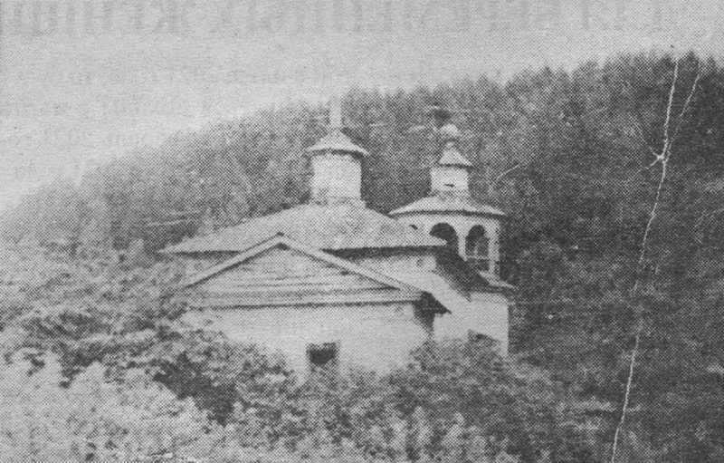

Село «Подкаменское»
Подкаменское — исчезнувшее село в Киренском районе
Иркутской области
России.
Располагалась на левом берегу реки Лена между деревнями Салтыкова и Половинная (Алымовка) у подножия ленского утёса. Эти земли сейчас входят в Алымовское муниципальное образование. В 43 верстах к северо-востоку от города Киренска.
Деревня отмечена в списке населённых мест Сибирского края 1929 года, как село Чечуйского
района с 32 дворами и 177 жителями.
По состоянию на 1 января 1966 года числилось как деревня Подкаменка Алымовского сельсовета Киренского района.
На советской топографической карте O-49-13.1:500000 издания 1982 года село отмечено как нежилое.
Село имело одну достопримечательность - разрушенный храм Николая
Чудотворца.
Архивные материалы

«Храм Николая Чудотворца»
Дополнительная информация:
Координаты: 57°57′45″ с. ш. 108°30′55″ в. д..
Село «Подкаменское» на карте России
*Если у вас имеется какая-либо информация и/или фото-/видеоматериалы, касающиеся деревни, описанной на сайте, то свяжитесь с нами через раздел «Контактая информация»